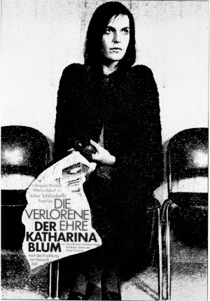

Tras la segunda guerra mundial, en la época de la post-guerra la población Alemana se encontraba con los ánimos decaídos en un mundo que no estaba dispuesto a perdonarlos todavía; el país ya sufría de sanciones, pero no parecía ser suficiente, la desconfianza, y el odio permanecían como rezagos de uno de los eventos de crueldad, deshumanización y muerte masiva vivida por tantos años. Dentro de este periodo surge una revolución de pensamiento, estilística, y estética, inspirada por la corriente francesa “Novella vague”. En la búsqueda de su expiación como país, jóvenes directorxs como Volker Schlöndorf, Fassbinder, Margarethe Von Trotta, Herzog, etc., proponen un cine en el cual no haya censura frente a temas políticos y sociales, en el que no se pretenda que no sucedió lo que pasó, ni tampoco ignorar como las consecuencias afectaban a la población alemana, buscaban salir de la comodidad de la resignación.
Algunos directores encontraron la forma de comenzar a reconstruir y redimir su cine desde el extranjero, como Herzog que crea desde afuera un nuevo sentido de identidad; cine creado dentro o fuera del país, todo coincide con que el nuevo cine alemán, no sólo es la muerte del viejo cine, sino del nacimiento de la búsqueda de la libertad de expresión, y producción, una búsqueda de una nueva forma de crear cine, adaptada a su contexto social. Es un cine que no ignora, ve para lograr entender, redimir, y construir.
